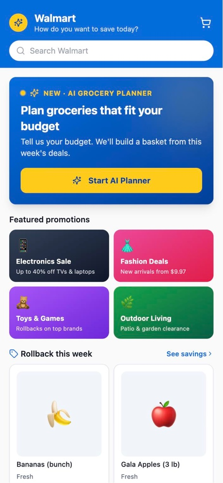
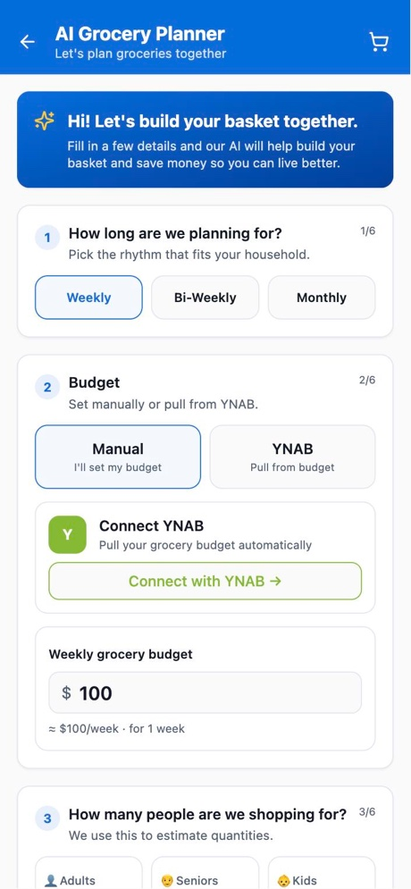
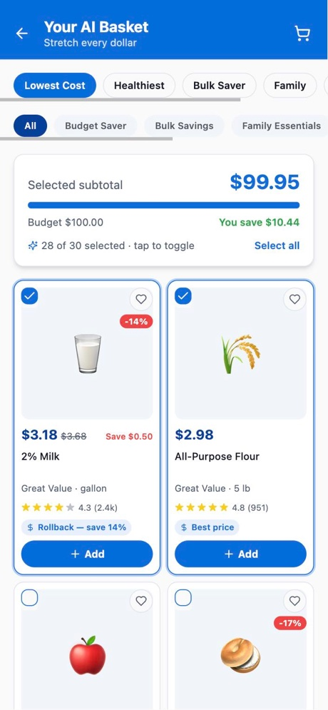
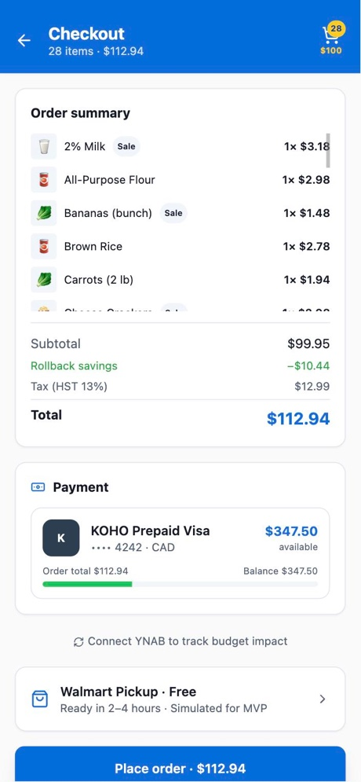
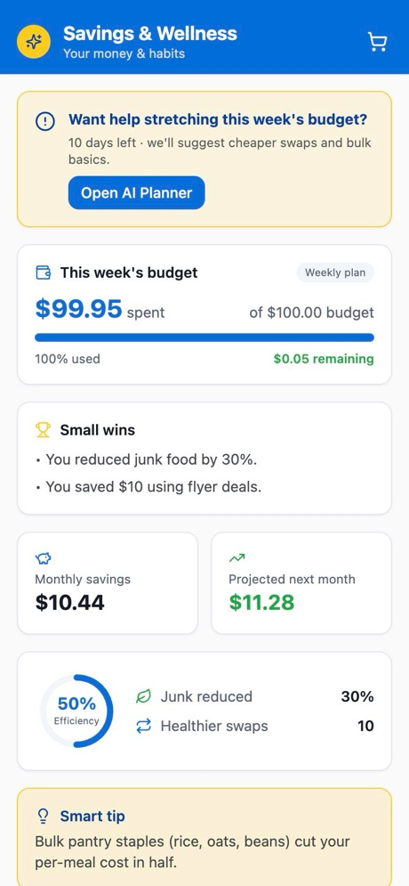

Product Requirements Document
An AI grocery planner that helps Walmart+ households plan the week's groceries within a real budget.
Section 1
Product. Smart Cart Companion: a Walmart+ capability that plans a household's groceries within its real budget, before it shops.
These segments come from competitor analysis, observed grocery-planning behavior, product gap analysis and market opportunity assessment. They still need validation with real users during the beta.
| Step | What shoppers do today | Result |
|---|---|---|
| 1 | Browse the weekly flyers to find this week's deals | Missed flyer savings |
| 2 | Check the grocery budget in a separate budgeting app | Overspending |
| 3 | Work out by hand which items give the best value across both | Decision fatigue |
Walmart excels at transaction fulfillment but lacks four things a planning household needs: proactive flyer intelligence, budget-aware planning, household optimization and a link to the household's financial tools.
| Option | Strong at | Why it falls short here |
|---|---|---|
| Walmart (native) | Commerce infrastructure, broad product range | No proactive budget intelligence, flyer automation or household grocery planning |
| Flipp | Flyer aggregation and finding savings | Doesn't build a personalized basket or complete the purchase |
| Instacart | Convenient delivery and shopping help | Little budget-first planning, weak financial integration |
| Amazon Fresh | Commerce and logistics | No flyer optimization or household budget alignment |
| YNAB | Budgeting | Doesn't turn the budget into an actual grocery plan |
| Smart Cart Companion | Combines grocery planning, flyer automation, budget sync, household personalization and repeat-purchase intelligence in one flow | |
Make Walmart+ the default place where households plan their groceries. Solving the weekly budget, savings and repeat-shopping problems up front lets Walmart expand from commerce into household grocery and financial planning.
Section 2
Vision. Plan groceries smarter within budget.
Long-term goal. A household-first AI planning ecosystem that automates flyer savings, aligns with real budgets, encourages healthier decisions, builds repeat weekly grocery habits and strengthens Walmart+ retention.
| For | Goal |
|---|---|
| Walmart | Lift Walmart+ retention by 8–12% among AI Planner users in the first six months · Lift AI basket-to-cart conversion by 10–15% · Lift flyer savings utilization by 25% |
| Shoppers | Stay within the grocery budget · Save planning time · Reduce overspending · See savings clearly · Make repeat grocery shopping simple |
| In the MVP | Optional power features | Conceptual (not built) |
|---|---|---|
| AI Grocery Planner Personalized onboarding Household-size intelligence Dietary optimization Flyer/rollback ingestion (mock data, scalable design) YNAB budget sync Basket generation Budget validation Walmart-native cart handoff |
KOHO balance awareness Smart Repeat Tiny Wins Pantry intelligence Advanced wellness Full predictive grocery automation |
Walmart live product APIs Walmart flyer APIs Full KOHO / Plaid integration Live payments and order processing |
| Tier | Features |
|---|---|
| Highest | AI Planner · Budget Sync · Flyer Automation |
| Medium | Smart Repeat · Wellness optimization |
| Lower | Behavioral insights · Pantry intelligence |
What to notice: the budget comes in before the basket is built, so the basket never starts over budget. Returning users skip onboarding because their preferences are recalled.
Failure states. If the budget API is unavailable, the shopper enters a budget manually. If flyer ingestion is unavailable, the planner uses a default optimized catalog.
Section 3
How the MVP works end to end. The shopper's inputs and budget enter on the left, a budget-checked basket comes out on the right, and the spend flows back into YNAB after checkout.
What to notice: the AI can only pick items that exist in the catalog, and every pick is validated before it reaches the cart. If the AI call fails or no key is set, the local engine builds the basket instead.
A mock Walmart catalog of grocery products with prices, rollback deals and ratings stands in for live data. Flyer ingestion is designed so the mock catalog can be swapped for Walmart's product and flyer APIs later without changing the screens.
OpenAI GPT-4o-mini receives the shopper's preferences and a compact copy of the catalog, and returns a basket as structured JSON. Its rules: pick only from the catalog using exact item IDs, stay within the total budget, respect dietary restrictions strictly, prefer items on sale, and cover the major food categories. Every returned ID is checked against the catalog. When no OpenAI key is set, or the call fails, the built-in local engine ranks the catalog against the shopper's preferences with five strategies: lowest cost, healthiest, bulk saver, family and brand.
| Integration | Status | Notes |
|---|---|---|
| Supabase database | Real | Accounts and synced app state |
| YNAB OAuth and sync-back | Real | Pulls the grocery budget, posts the order back |
| Basket generation (local engine or OpenAI) | Real | Works without any key, using the local engine |
| Vercel deployment | Real | Hosts the live MVP |
| Walmart live product and flyer APIs | Conceptual | Mock catalog for now |
| KOHO / Plaid full integration | Conceptual | Demo mode in the MVP |
| Live payments and order processing | Conceptual | Simulated checkout |
Section 4
Each entry starts from an assumption the product depends on and covers what breaks if it fails, how we'd notice and how we'd respond.
Breaks: shoppers ignore the AI basket, so basket adoption stays low.
Detect: basket conversion declines.
Fix: hybrid controls with manual overrides, so shoppers can toggle, swap and switch strategies. Contain it by adding transparency and control.
Breaks: the planner recommends savings that don't exist at the shelf.
Detect: a rising price-mismatch rate.
Fix: SLA monitoring on flyer freshness (target: refreshed within 24 hours), with fallback to a default optimized catalog.
Breaks: OAuth or YNAB API failures leave the planner without a budget.
Detect: the OAuth failure rate.
Fix: a manual budget fallback, so planning continues in manual mode without blocking the shopper.
Breaks: limited real-time integration with Walmart's product, flyer and cart systems.
Detect: integration blockers during the beta.
Fix: mock data behind a scalable architecture, plus a phased rollout that works within those limits.
Breaks: weak personalization; baskets don't match the household.
Detect: user trust declines.
Fix: feedback loops and confidence scoring, with recommendation retraining.
Breaks: the OpenAI call fails or no key is configured.
Detect: each basket is flagged as built by the AI or by the local engine.
Fix: automatic fallback to the local engine, so a basket is always generated.
Section 5
Weekly Repeat Grocery Planning Usage: the percentage of users who return every week to use the AI grocery planner. Target: +25% in repeat planner engagement within the first six months of the Walmart+ beta cohort. It measures habit, stickiness and Walmart+ retention potential. Groceries are bought every week, so a planner that works should become a weekly routine.
| Metric | Type | Definition | Target | Why this target |
|---|---|---|---|---|
| Weekly repeat planning usage | North Star | % of users returning weekly to the AI planner | +25% | Ambitious but achievable for a tool that solves a weekly, recurring pain |
| Basket conversion rate | Business | % of AI baskets added to cart and moved toward checkout | +10–15% | Recommendation systems usually lift conversion step by step; a conservative, enterprise-realistic range |
| Walmart+ retention uplift | Business | Increase in Walmart+ retention among planner users | +8–12% | Retention moves gradually; this avoids overestimating the early impact |
| Budget compliance rate | User trust | % of baskets that stay within the stated budget | > 70% | A clear majority shows the core promise holds, while allowing for edits and price changes |
| Basket generation speed | Operational | Time to generate a basket | < 3 sec | Consumer AI tools need near-instant results; longer delays risk abandonment |
| Basket generation latency | API uptime | Cart accuracy | Flyer freshness SLA |
|---|---|---|---|
| < 3 seconds | > 99% | > 99% | < 24 hours |
| Test | Compares | Measures |
|---|---|---|
| A | AI Planner vs. the standard Walmart grocery flow | Basket conversion · savings utilization · repeat usage |
| B | YNAB-synced budgets vs. manual budgets | Budget compliance · retention · user trust |
Section 6

Home
AI Planner
AI basket
Checkout
Savings & WellnessScreens from the live MVP running on mock data.
| Phase | Scope |
|---|---|
| 1 | Walmart+ beta for budget-conscious households and families |
| 2 | Regional Walmart+ expansion, plus Smart Repeat |
| 3 | A full household grocery operating ecosystem |
| Milestone | Goal | Status |
|---|---|---|
| MVP prototype development | Core AI planner and Walmart workflow integration | Completed |
| PRD and strategic artifact buildout | PRD for stakeholders | Current |
| Beta integration phase | Walmart+ pilot deployment | Planned |
| Smart Repeat launch | Behavioral retention layer | Phase 2 |
| Household grocery operating system | Full ecosystem expansion | Phase 3 |
Primary: Walmart+ subscription retention, more repeat grocery transactions and larger recurring baskets. Secondary: fintech referral partnerships and premium AI planning tools. Expected outcome: higher customer lifetime value through retention and household reliance on the planner.
Always prioritize: budget clarity · household simplicity · savings automation · user trust · configurable control · a Walmart-native experience · sustainable repeat behavior.
Section 7
The specification the basket planner is built against, taken from the MVP's planner.
Planning period (weekly, bi-weekly or monthly) · budget (manual or from YNAB) · household (adults, seniors, kids) · dietary preferences · pantry items · the product catalog with prices, deals and ratings.
Mapped from the RICE prioritization tiers in Section 2.
| Priority | Requirement |
|---|---|
| MUST | AI Planner: generate a personalized grocery basket from the shopper's inputs |
| MUST | Budget Sync: plan within the real budget, from YNAB or entered manually, and sync spend back |
| MUST | Flyer Automation: build baskets from this week's flyer and rollback deals |
| SHOULD | Smart Repeat: make next week's plan faster for returning households |
| SHOULD | Wellness optimization: encourage healthier choices within budget |
| COULD | Behavioral insights on spending and planning habits |
| COULD | Pantry intelligence: account for what the household already has |
Section 8
| Term | Meaning in this document |
|---|---|
| Walmart+ | Walmart's paid membership program. Its retention is the main business goal. |
| Flyer / rollback | Weekly promotional prices. "Rollback" is Walmart's name for a temporary price cut. |
| YNAB | "You Need A Budget", a budgeting app. Used here as a budget source and for spend sync-back. |
| KOHO | A Canadian prepaid Visa and money app. Its balance can be checked at checkout. |
| Plaid | A service that securely connects apps to bank accounts. Used to read the KOHO balance. |
| OAuth | A standard way to let one app access another without sharing a password. Used for YNAB sign-in. |
| North Star metric | The one metric that best captures the value the product delivers to users. |
| RICE | A prioritization method that scores features on Reach, Impact, Confidence and Effort. |
| A/B test | An experiment that compares two versions with similar user groups to see which performs better. |
| Budget compliance | Whether a generated basket stays within the stated budget. |